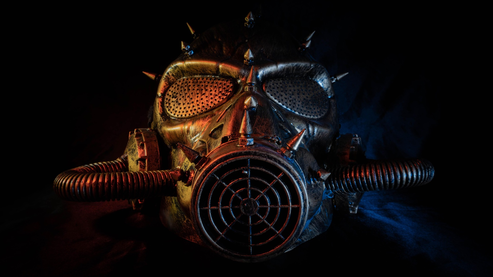

Costume Ideas
To view alternative options: Adjust the index page size!

srcset + sizes (resolution switching)
Same photo, exported at multiple widths. The browser chooses the smallest file that still looks sharp.